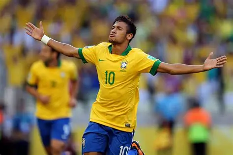

Neymar da Silva Santos Júnior (Brazilian Portuguese pronunciation: [nejˈmaʁ dɐ ˈsiwvɐ ˈsɐ̃tuz ˈʒuni.oʁ] ⓘ; born 5 February 1992), simply known as Neymar Júnior (shortened to Neymar Jr) or mononymously as Neymar, is a Brazilian professional footballer who plays as an attacking midfielder or a forward for Campeonato Brasileiro Série A club Santos, which he captains, and the Brazil national team. Known for his dribbling, technical ability, playmaking, and finishing, he is widely regarded as one of the greatest players of all time. He is one of only five players to have scored 100 goals with three different clubs,[α] both the all-time Brazilian top goalscorer (43) and assist provider (33) in the UEFA Champions League, ranks second for the all-time South American men's top goalscorers in international football (79), and was the all-time top assist provider in international football (59) from 2023 to 2025.[β]
Neymar made his professional debut with Santos in 2009 and won the Copa Libertadores in 2011, scoring in the finals. In 2013, Barcelona signed him and he soon became part of a dominant attacking trio with Lionel Messi and Luis Suárez—known as MSN. In 2014–15, Neymar won the treble of La Liga, the Copa del Rey, and the Champions League, finishing as the top goalscorer of both that season's Champions League and the Copa del Rey.[γ] In the following season, he helped Barcelona win the double. At Barcelona, Neymar finished in third place for the Ballon d'Or in 2015 and 2017, only behind Messi and Ronaldo.
In 2017, Neymar left Barcelona to join Paris Saint-Germain, becoming the most expensive player in history after his €222 million release clause was activated.[δ] From 2018 onwards, injuries hampered Neymar's career, causing limited game time. Despite this, he was instrumental to PSG retrieving the Ligue 1 title in his debut season and was named Player of the Year, led them to their first-ever Champions League final in 2020, became their fourth all-time top goalscorer, and won four more Ligue 1 titles. In 2023, he joined Saudi club Al-Hilal before returning to Santos in January 2025.
At 18, Neymar debuted for Brazil and has since become the nation's second-most-capped player, only trailing Cafu. He is the nation's all-time top goalscorer, with 79 goals in 128 matches. Neymar won the 2013 FIFA Confederations Cup and received the Golden Ball before being voted in the Dream Team and receiving the Bronze Boot at the 2014 FIFA World Cup. Since then, he captained Brazil to their first Olympic gold medal in men's football at the 2016 Summer Olympics, having previously won silver in the 2012 edition, and was focal to Brazil's runners-up finish in the 2021 Copa América, where he was jointly awarded Best Player. In 2023, he surpassed Pelé's 52-year long record as Brazil's all-time top goalscorer.

!MESSI!